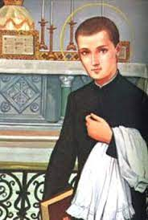
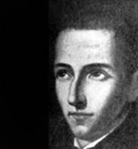
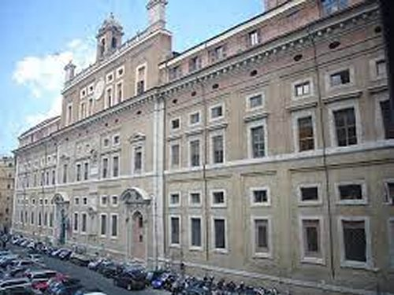

“CULTIVANDO A SANTIDADE”
CURSO DE RETÓRICA
A cidade de Malines era grande e movimentada, bem maior do que Diest onde moravam. João de dia servia ao seu mestre e à noite, no sótão onde dormia e descansava, estudava e preparava os deveres da Escola, iluminado por uma vela.
Em 1615 surgiu uma grande novidade na cidade: a Congregação dos Padres Jesuítas fundaram um Colégio em Malines, que muito movimentou o ambiente estudantil, atraindo a atenção e o interesse dos jovens que em grande maioria, deixaram os outros Colégios onde estudavam e se matricularam no novo Estabelecimento de Ensino. Também João, que já estava ciente do bom ensinamento dos Padres Jesuítas, foi estudar no Novo Colégio matriculando-se no Curso de Retórica. E consciente dos ensinamentos recebidos em sua existência e sempre buscando uma vida disciplinada e amorosa com DEUS e NOSSA SENHORA, elaborou um programa para os seus dias: pela manhã de preferência a Santa Missa, e durante o dia a recitação do Rosário e do Pequeno Oficio da SANTÍSSIMA VIRGEM MARIA; semanalmente fazia a Confissão Sacramental e diariamente recebia a Sagrada Comunhão Eucarística na Santa Missa.
FALECEU A MÃE DE JOÃO
No dia 1 de dezembro de 1616, a senhora Isabel sua mãe, faleceu depois de muitos sofrimentos, finalmente foi descansar no Paraíso Divino. João chorou muito perto do pai e os dois conversaram bastante sobre os fatos da existência. A tristeza invadiu o coração do senhor Carlos, pai do João, com tanta intensidade, que por fim lhe causou um grande bem as palavras do filho, fazendo-o se aproximar das verdades cristãs e da fidelidade ao Amor de DEUS.
LIVRO SOBRE SÃO LUIZ GONZAGA

A CONVERSÃO DE SEU PAI
O entusiasmo e o progresso do filho João, cada vez maior, também despertou a fé do seu pai, que embora fosse cultivada nas raríssimas oportunidades, ganhou uma influência maior e preponderante, pelo laço paternal. Nas cartas e nos encontros pai e filho, o assunto aflorava vibrante e repleto de simpatia. Relembravam o sofrimento de Isabel, esposa do Carlos e mãe de João, assim como aquelas belíssimas e sentimentais palavras do filho, relembrando as orações que a mãezinha carinhosamente lhe ensinou na infância. Coisas simples e reais, mas foram preciosos ingredientes que faltavam ao coração do pai. João falou ao seu pai com palavras simples e com tanto amor, repletas de tanta ternura e consolação, que as graças que delas emanaram, conseguiram uma significativa mudança no pensamento e no proceder da existência do pai, de maneira objetiva e eficaz. O senhor Carlos Berchmans, pai de João, decidiu fazer os Exercícios Espirituais, que eram muito utilizados na Companhia de JESUS, e também, retornou aos estudos. Como precioso resultado, no dia 14 de agosto de 1617, um ano depois, ele foi ordenado sacerdote Jesuíta.
PREFEITO DOS NOVIÇOS
Também João, após um ano de Noviciado, em face de suas excepcionais qualidades pessoais e sólido conhecimento das doutrinas, o seu superior confiou a João o posto de “prefeito dos noviços”. Nessa função embora passageira, ele teve um desempenho admirável. Fraternalmente sabia conversar com os colegas e santamente, com espírito amoroso, sabia corrigir e aperfeiçoar os procedimentos e pensamentos de alguns, que por razões diversas, manifestavam ações e comportamentos diferentes dos preceitos estabelecidos.
Por essas e outras atitudes exemplares, ele cativou a amizade de todos, e inclusive era denominado pelos seus confrades de “Frère Hilarius” (no português = Irmão Contente ou Irmão Alegre), pois ele rejeitava qualquer tipo de tristeza. Com insistência preconizava alegria no viver, de conformidade com a Regra Jesuíta.

ESTUDANTE ESFORÇADO E INTELIGENTE
Nos estudos, seus mestres sempre falavam bem e com orgulho do jovem João, que consideravam um prodígio. Eles diziam: “Ele é diligente, interessado e firme, rapidamente já havia superado em inteligência e habilidade os jovens colegas. Eu o via como uma espécie de pequeno milagre. Diante dos demais alunos, eu o elogiava, com o objetivo dos demais alunos considerá-lo como modelo. Fazia isso para incentivar os demais rapazes. Um dia, quando o seu pai me perguntou como era o aproveitamento dele na escola, eu me recordo de ter falado assim": “Quão abençoado é o senhor pelo fato de ter um filho assim! Sem dúvida, ele será a sua consolação, e particularmente, será a minha honra e glória, pela oportunidade que tive de lhe transmitir e de lhe ensinar, acontecimentos e fatos da vida”. Essas eram as palavras do seu mestre Professor Wouter Van Stiphout.
OS VOTOS SOLENES
Em Setembro de 1618 João emitiu os “votos solenes de Pobreza, Castidade e Obediência” e escreveu ao seu pai: “Morrerei na Cruz de JESUS, fixado por três cravos: da pobreza, da castidade e da obediência”.
MORTE DO PAI - JOÃO FOI ESTUDAR NA ITÁLIA
O Provincial da Ordem Jesuíta decidiu enviar o jovem Berchmans para Roma com outro colega, para completar o seu Curso no Colégio Romano. Quando João estava se preparando para viajar primeiro a Diest para se despedir do seu Pai, não teve o consolo de poder fazê-lo, porque logo recebeu a triste notícia do falecimento de seu Pai. E assim, João triste, mas feliz com seu Pai, junto com o seu colega viajaram a pé para Roma no dia 24 de Outubro de 1618. Percorreram 1.500 km e passaram por Paris, Lyon, atravessaram os Alpes e chegaram a Milão. No Natal estiveram na cidade de Loreto (na Itália), e depois prosseguiram viagem até Roma, aonde chegaram no dia 31 de dezembro. Na Casa do Gesù (Casa de JESUS, dos Jesuítas), o Padre Mucio Vitelleschi, Geral da Companhia Jesuíta, os abraçou carinhosamente. No dia 2 de janeiro de 1619 os dois flamengos (Os nascidos na Bélgica são assim denominados), foram se apresentar aos Diretores do Colégio Romano, atual Universidade Gregoriana, de Roma. Ao chegarem ao prédio, uma imensa satisfação invadiu o coração de João, porque teve a alegria de receber para ocupar, a cela que foi usada por São Luis Gonzaga. Por outro lado, os professores e alunos receberam os dois jovens com muita simpatia. Alguns até chegaram a brincar dizendo: “Chegaram dois flamengos com ares de Anjo”.
NA UNIVERSIDADE GREGORIANA EM ROMA

PROGRESSO NOS ESTUDOS
João às vezes comentava com algum professor ou colegas mais próximos: “Estes três anos de estudos no Colégio Romano passaram rapidamente!” E na verdade, o depoimento de todos os professores repetia uma mesma afirmativa: “Seus estudos eram verdadeiramente brilhantes”. Os mestres acrescentavam: “O sucesso de João não se manifestava num esforço isolado, numa prova ou numa única matéria. Ele deixava transparecer conhecimento generalizado, e buscava nas suas orações, que eram realizadas com sentimento e sincera devoção a SANTÍSSIMA VIRGEM MARIA, o verniz especial, que invisivelmente fazia brilhar o equilíbrio da fé, derramando autenticidade, beleza, além de monopolizar as atenções daqueles que ouviam ou liam os seus trabalhos”. Quando alguém lhe perguntava:“Qual recurso utilizava nos seus estudos”? Ele simplesmente dizia: “Eu vivo feliz na minha vocação e sinto verdadeiro amor pela Eucaristia.”